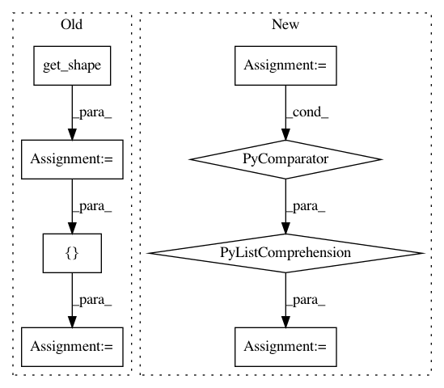

2d074b5ddfbfbc486506384993bb5b269903e144,scripts/tf_cnn_benchmarks/benchmark_cnn.py,BenchmarkCNN,_build_input_processing,#BenchmarkCNN#Any#,2190
Before Change
datasets_repeat_cached_sample=(
self.params.datasets_repeat_cached_sample),
shift_ratio=shift_ratio)
images_shape = images_splits[0].get_shape()
labels_shape = labels_splits[0].get_shape()
input_producer_op = []
input_producer_stages = []
for device_num in range(len(self.devices)):
staging_area = data_flow_ops.StagingArea(
[images_splits[0].dtype, labels_splits[0].dtype],
shapes=[images_shape, labels_shape],
shared_name="image_producer_staging_area_%d" % device_num)
input_producer_stages.append(staging_area)
for group_index in xrange(self.batch_group_size):
batch_index = group_index + device_num * self.batch_group_size
put_op = staging_area.put(
After Change
input_producer_op = []
input_producer_stages = []
for device_num in range(len(self.devices)):
staging_area = data_flow_ops.StagingArea(
[parts[0].dtype for parts in input_list],
shapes=[parts[0].get_shape() for parts in input_list],
shared_name="input_producer_staging_area_%d" % device_num)
input_producer_stages.append(staging_area)
for group_index in xrange(self.batch_group_size):
batch_index = group_index + device_num * self.batch_group_size
put_op = staging_area.put(
In pattern: SUPERPATTERN
Frequency: 3
Non-data size: 8
Instances
Project Name: tensorflow/benchmarks
Commit Name: 2d074b5ddfbfbc486506384993bb5b269903e144
Time: 2018-10-02
Author: laigd@google.com
File Name: scripts/tf_cnn_benchmarks/benchmark_cnn.py
Class Name: BenchmarkCNN
Method Name: _build_input_processing
Project Name: NifTK/NiftyNet
Commit Name: 6b48055fdfe3c628833ed26ca394ef2fb1d97f82
Time: 2017-10-26
Author: wenqi.li@ucl.ac.uk
File Name: niftynet/layer/resampler.py
Class Name: ResamplerLayer
Method Name: _resample_nearest
Project Name: HyperGAN/HyperGAN
Commit Name: a02527e58d09b7f86575f5b790db1fa9dbc8e4e6
Time: 2016-10-29
Author: martyn@255bits.com
File Name: lib/gan.py
Class Name:
Method Name: discriminator